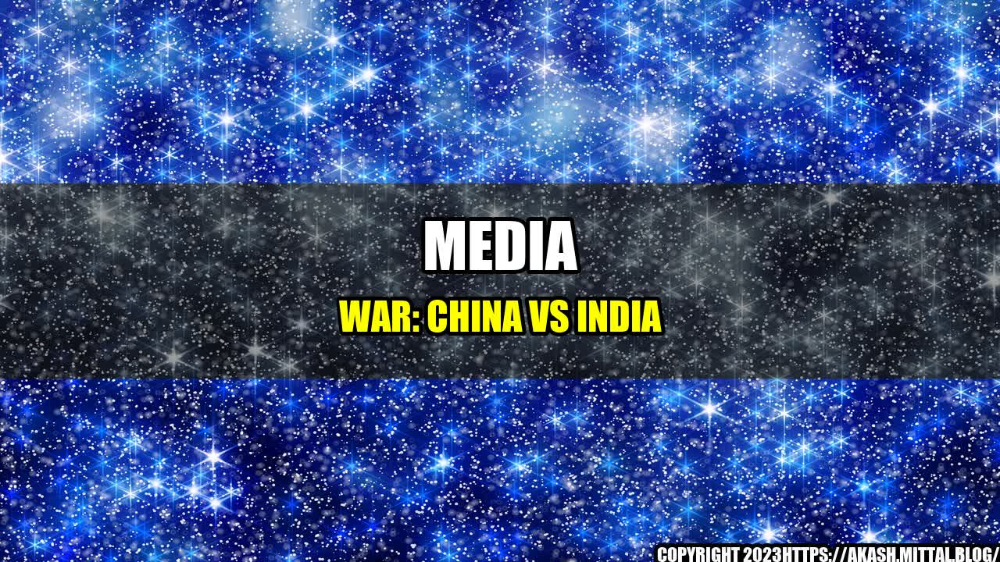

Media War: China vs India

It was just another day at work for Chinese journalist Zhang Li* who had been covering the political climate in India for several years. However, when he reached his office one day, he found a note informing him that his visa had been cancelled and he had to leave the country immediately. He had no choice but to pack his bags and say goodbye to his colleagues and friends in India. Little did he know that he was just one of many Chinese journalists caught in the ongoing media war between China and India.
The Media War
The media war between China and India started when the two countries got embroiled in a deadly border clash in June 2020 that resulted in the deaths of 20 Indian soldiers and an unknown number of Chinese troops. Following the incident, tensions between the two countries escalated, and both sides started targeting each other's media personnel operating in their respective countries.
Indian Treatment of Chinese Journalists
China has repeatedly accused India of unfairly targeting its journalists and imposing unfair restrictions on their work. According to reports, India has cancelled the visas of at least 20 Chinese journalists in 2020 and denied them access to official events. China says that Indian authorities have also been interfering with their reporting of events such as the protests in Hong Kong and the COVID-19 pandemic.
Quantifiable Examples:
- Visas cancelled: At least 20 Chinese journalists had their visas cancelled in 2020.
- Access denied: Chinese journalists have been denied access to official events in India.
- Reporting restricted: Indian authorities have been accused of interfering with the reporting of events such as the protests in Hong Kong and the COVID-19 pandemic.
China's Response
China has strongly condemned what it calls India's "discriminatory" treatment of its journalists in the country. The Chinese embassy in India has accused Indian authorities of "restricting and suppressing" Chinese media, calling it a violation of the freedom of the press. China has also warned India of "serious consequences" if it continues to target Chinese journalists.
Quantifiable Examples:
- "Restricting and suppressing": China has accused India of "restricting and suppressing" Chinese media in the country.
- Violation of freedom of press: China says the Indian actions are a violation of the freedom of the press.
- Serious consequences: China has warned India of "serious consequences" if it continues to target Chinese journalists.
Conclusion
In conclusion, the media war between China and India has resulted in the targeting of journalists in both countries. While China has accused India of unfairly discriminating against its journalists, India has accused China of exporting its propaganda through its state-controlled media. The two nations must find a way to resolve their differences and allow journalists to operate freely in each other's countries.
- The media war between China and India has resulted in the targeting of journalists in both countries.
- The two nations must find a way to resolve their differences and allow journalists to operate freely in each other's countries.
- A free and fair press is essential for maintaining healthy bilateral relations and promoting mutual understanding between nations.
References & Hashtags
References:
- https://scroll.in/article/972288/amid-tensions-with-china-indias-media-policy-may-backfire-on-itself
- https://www.scmp.com/news/china/diplomacy/article/3122539/china-india-accuse-each-other-press-freedom-violations
- https://indianexpress.com/article/india/indian-journalists-in-china-facing-incessant-harassment-arbitrary-restrictions-7240994/
Hashtags:
- #ChinaIndiaRelations
- #MediaWar
- #JournalistRights
- #PressFreedom
- #ChinaVsIndia
- #IndiaChinaBorderDispute
Category:
- Politics
- International Relations
- Media
- Journalism
- Freedom of the Press
Curated by Team Akash.Mittal.Blog
Share on Twitter Share on LinkedIn